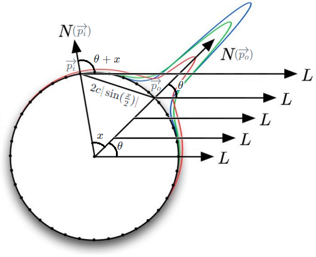

The diffusion profileR(Δx,Δy,(Δz)) by "14.4.2 Rendering with Diffusion Profile" of [dEon 2007] is called the scattering
profileSp(po,pi) by "Equation (11.6)" of PBR Book and is
called the radial (scattering) profileSr(∥pi−po∥) by
"Equation (11.9)" of PBR Book.
By "Advantages of a Sum-of-Gaussians Diffusion Profile" of [dEon 2007] and "Equation
(11.9)" of PBR
Book, by assuming the material is homogeneous, the diffusion profile is isotropic (radially symmetric).
This means that the diffusion profile can be reduced to the 1D function R(Δx,Δy)=R(Δx2+Δy2(+Δz2))=R(r)=R(∥pi−po∥) and Sp(po,pi)=Sr(∥pi−po∥).
By the "Equation (11.7)" of PBR
Book, the general BSSRDF term S(po,ωo,pi,ωi) is factored into spatial and directional
components which can be integrated independently from each other. And the calculation of the subsurface
scattering can be simplified as Lo(po,ωo)=∫R2(∫ΩS(po,ωo,pi,ωi)Li(pi,ωi)(cosθi)+dωi)dpi≈(1−Fr(cosθo))(∫R2R(∥pi−po∥)(∫Ωc1−Fr(cosθi)π1Li(pi,ωi)(cosθi)+dωi)dpi) where
Fr(cosθ)) is the Fresnel term and c=1−2∫02πFr(cosθ))sinθcosθdθ is the the first moment
of the Fresnel term.
By "SSS-NOTE-TRSM" of Unity3D,
it is too inefficient to apply the first Fresnel term 1−Fr(cosθo) after the diffusion profile term R(∥pi−po∥). And the
calculation of the subsurface scattering is further simplified as Lo(po,ωo)=(1−Fr(cosθo))(∫R2R(∥pi−po∥)(∫Ωc1−Fr(cosθi)π1Li(pi,ωi)(cosθi)+dωi)dpi)≈∫R2R(∥pi−po∥)(∫Ω(1−Fr(cosθo))c1−Fr(cosθi)π1Li(pi,ωi)(cosθi)+dωi)dpi=∫R2R(∥pi−po∥)F(pi,ωo)dpi where F(pi,ωo)=∫Ω(1−Fr(cosθo))c1−Fr(cosθi)π1Li(pi,ωi)(cosθi)+dωi is the form factor. Although the terms irradiance E and form factor F
may be interchangeably used, technically irradiance E should NOT be divided by π. This means that E=πF.
Analogously to "Figure 13.10" of PBR
Book, we have the norm of the diffusion profile ∥R(Δx,Δy)∥=∫−∞∞∫−∞∞R(Δx,Δy)dΔxdΔy=∫0∞∫02πR(r)rdθdr=∫0∞R(r)2πrdr. The norm of the
diffusion profile is called the total diffuse reflectanceRd by "Incorporating Diffuse Color Variation" of [dEon 2007] and is called the effective
albedoρeff by "Equation (11.11)" of PBR Book.
Evidently, the diffusion profile depends on the position, since the total diffuse reflectance depends on the
position. This means that the calculation of the subsurface scattering should technically be written as Lo(po,ωo)=∫R2R(∥pi−po∥)F(pi,ωo)dpi=∫R2Rpi(∥pi−po∥)F(pi,ωo)dpi. However, it is too difficult to calculate the subsurface scattering if the diffusion profile varies
between the positions. Thus, we resort to use the normalized diffusion profile RN(∥pi−po∥)=∥Rpi(∥pi−po∥)∥Rpi(∥pi−po∥)=Rd(pi)Rpi(∥pi−po∥) which is assumed
to be the same at each postion. And the calculation of the subsurface scattering is further simplified as Lo(po,ωo)=∫R2Rpi(∥pi−po∥)F(pi,ωo)dpi=∫R2RN(∥pi−po∥)Rd(pi)F(pi,ωo)dpi.
According to Lo(po,ωo)=∫R2RN(∥pi−po∥)Rd(pi)F(pi,ωo)dpi, we merely need to calculate the total diffuse reflectance Rd(pi) and the form factor F(pi,ωo) at each vicinal position pi around the center position po, and apply the blur pass to accumulate them according to the weights derived from the normalized diffusion
profile RN(∥pi−po∥).
2. Texturing Mode
However, by "Incorporating Diffuse Color Variation" of [dEon 2007], it is difficult to
measure the total diffuse reflectance. Thus, we resort to use the albedo from the texture asset to simulate the
total diffuse reflectance.
Pre- and Post-Scatter Texturing Mode
By "Combining Pre-Scatter and Post-Scatter Texturing" of [dEon 2007], the "pre- and
post-scatter texturing mode" assumes that the total diffuse reflectance Rd(pi) at each vicinal position equals
product of the square root of the albedo ρ(pi) at the vicinal position and the square root of the albedo ρ(po) at the center position. This means that we have Lo(po,ωo)=∫R2RN(∥pi−po∥)Rd(pi)F(pi,ωo)dpi=∫R2ρ(po)RN(∥pi−po∥)ρ(pi)F(pi,ωo)dpi where the ρ(pi) is multiplied before the blur pass and the ρ(po) is multiplied after the blur pass.
By "Combining Pre-Scatter and Post-Scatter Texturing" of [dEon 2007], this texturing
mode is the most physically plausible.
Post-Scatter Texturing Mode
By "Post-Scatter Texturing" of [dEon 2007], the "post-scatter texturing mode"
assumes that the total diffuse reflectance Rd(pi) at each vicinal position equals the
albedo ρ(po) at the center position. This means
that we have Lo(po,ωo)=∫R2RN(∥pi−po∥)Rd(pi)F(pi,ωo)dpi=Lo(po,ωo)=∫R2ρ(po)RN(∥pi−po∥)F(pi,ωo)dpi where the ρ(po) is multiplied after the blur pass.
Since the albedo from the texture asset is NOT blurred, no color bleeding occurs in this texturing
mode and it seems that this texturing mode is undesirable. However, by "Post-Scatter Texturing" of
[dEon 2007], when the texture asset is the photograph of real skin, since natural color bleeding has already
occurred and no extra blurring should be performed, this texturing mode is an appropriate choice.
Both "pre- and post-scatter texturing mode" and "post-scatter texturing mode" are
supported in Unity3D.
However, only the "pre- and post-scatter texture mode" is supported in UE4.
Subsurface Profile Shading Model without Enable Burley
N/A
Disney SSS
N/A
N/A
Subsurface Profile Shading Model with Enable Burley
Subsurface Scattering Material Type
Although the blur pass is much simpler than the general BSSRDF term, a general 2D convolution is still
too unwieldy to be used in real time. By "Advantages of a Sum-of-Gaussians Diffusion Profile" of [dEon
2007], by assuming the range of the significant contribution domain of the red channel of the diffusion profile
is 16 mm, 4096 (64 x 64) samples is required per pixel in the blur pass. Thus, more efficient method should be
proposed to settle down this problem.
The main idea of PreIntegrated SSS is to pre-integrate Lo(po,ωo)=∫R2RN(∥pi−po∥)Rd(pi)F(pi,ωo)dpi offline.
The "Post-Scatter Texturing Mode" is assumed. This means that Rd(pi)=ρ(po). And the form factor is approximated by
the Lambert BRDF. This means that F(pi,ωo)=∫Ω(1−Fr(cosθo))c1−Fr(cosθi)π1Li(pi,ωi)(cosθi)+dωi≈∫Ωπ1Li(pi,ωi)(cosθi)+dωi. And the light is assumed to be the directional light. This means that the Delta
Distribution is applied and we have F(pi,ωo)=∫Ωπ1Li(pi,ωi)(cosθi)+dωi=π1EL(cosθi)+. And the calculation of the subsurface scattering is further simplified as Lo(po,ωo)=∫R2RN(∥pi−po∥)Rd(pi)F(pi,ωo)dpi=∫R2RN(∥pi−po∥)ρ(po)π1EL(cosθi)+dpi=π1ρ(po)EL∫R2RN(∥pi−po∥)(cosθi)+dpi.
Let D(θ,c)=∫R2RN(∥pi−po∥)(cosθi)+dpi where θ is the angle between the
normal N of the center position po and the opposite direction L of the directional light, and c is the curvature which can be
calculated on-the-fly as c1=ddx(P)ddx(N). However, the
curvature is precomputed by GFSDK_FaceWorks_CalculateMeshCurvature
in NVIDIA FaceWorks. Perhaps the on-the-fly method is NOT precise enough.
By [Penner 2011], D(θ,c) is
approximated as ∫−ππRN(2c∣sin(2x)∣)dx∫−ππRN(2c∣sin(2x)∣)(cos(θ+x))+dx and pre-integrated
offline to be stored in the LUT (Look Up Table).

We assume that θ is zero, and we have r=2csin(2x) due to the symmetry. By "13.5.2 Polar
Coordinates" of PBR
Book, we have that D(θ,c)=∫R2RN(∥pi−po∥)(cosθi)+dpi=∫0∞∫02πRN(r)r(cosθi)+dθdr=2π∫0∞RN(r)r(cosθi)+dr=2π∫02cRN(r)r(cosθi)+dr+2π∫2c∞RN(r)r(cosθi)+dr=2π∫0πRN(2csin(2x))(2csin(2x))(cos(θ+x))+dxdrdx+2π∫2c∞RN(r)r(cosθi)+dr=2π∫0πRN(2csin(2x))(2csin(2x))(cos(θ+x))+（2c21cos(2x)）dx+2π∫2c∞RN(r)r(cosθi)+dr=2πc2∫0πRN(2csin(2x))(cos(θ+x))+sinxdx+2π∫2c∞RN(r)r(cosθi)+dr which is totally
different from the numerator ∫−ππRN(2c∣sin(2x)∣)(cos(θ+x))+dx by [Penner 2011].
And
And thus the denominator ∫−ππRN(2c∣sin(2x)∣)dx
Usually, the diffusion profile is normalized which indicates the energy conservation. This means that
∫−ππR(2rsin(2x))dx=1. However, according to [Penner 2011], D(θ,r1)=∫−ππR(2rsin(2x))dx∫−ππ∣cos(θ+x)∣⋅R(2rsin(2x))dx where denominator
is added to make sure the diffusion profile is normalized.
In the GPU Pro 2, the D(θ,r1) is calculated by
integrateDiffuseScatteringOnRing. And there are some points to note.
[Penner 2011] merely follows [dEon 2007] and the diffusion profile is approximated by the
Gaussians (the Scatter in the code). However, the motivation of [dEon 2007] is that the Gaussian blur is a separable filter, and thus the general 2D
convolution can be replaced by 1D convolutions to improve the performance. In my opinion, it is acceptable
to perform a general 2D convolution even by using the exact accurate diffusion profile, since the approach
proposed by [Penner 2011] pre-integrates the convolution, and the efficiency doesn't matter
too much for offline precomputing.
The pre-integral is performed on a ring rather than on a sphere. This is
reasonable since it is assumed that the diffusion profile is radially symmetric.
In the FaceWorks, according to the numerical quadrature, the funtion value f(x) is multiplied by the difference of the
domain Δx (the scale
in the code).
However, in the GPU Pro 2, there is no such code like scale since the Δx appears in both numerator and
denominator, and the it is not necessary to multiply f(x) by Δx.
In the FaceWorks, the D(θ,r1) is calculated by
GFSDK_FaceWorks_GenerateCurvatureLUT. However, there is some subtle modification.
The 2rsin(2x) is replaced by the rx (the delta
in the code). Technically, the 2rsin(2x) is more correct since the diffusion
profile describes the light absorption inside the medium rather than over the surface. Perhaps the 2rsin(2x) and the rx are close when the x is small.
The denominator ∫−ππR(2rsin(2x))dx is omitted perhaps due to the
fact that the diffusion profile has been normalized. Actually, I try to calculate the denominator by myself,
and I find the denominator is really close to one.
In the GPU Pro 2, three normals should be used for different RGB components and the LUT should be
sampled three times according to three different θs. Perhaps this method
is not efficient and the FaceWorks detaches the dot(N,L),
which denotes the part of the integral where x is close to zero and the diffuse profile is close to one,
from the total integral D(θ,r1). Evidently, the remaining part of the
integral is relatively small, and thus FaceWorks maps the remaining part of the integral from [-0.25, 0.25]
to [0, 1] to fully use the precision of the texture (the rgbAdjust in the code). The
GFSDK_FaceWorks_EvaluateSSSDirectLight is used to calculate the diffuse term. The LUT is
only sampled once and three normals are used to calculate the dot(N,L)
which is detached from the total integral.
3-2. Separable SSS
The diffuse reflectance term of the Subsurface ProfileShading
ModelwithoutEnable
Burley of UE4 is based on the Separable SSS [Jimenez 2012].
The main idea of the Separable SSS is to approximate the diffusion profile kernel by the separable
kernel.
Note that the word "separable" in the "Separable SSS" has nothing to do with the
"11.4.1 Separable BSSRDFs" of PBR Book.
The approach of [dEon 2007] is to approximate the diffusion profile by the weighted sum of 6
Gaussians, and thus the general 2D convolution can be replaced by 12(2 x 6) 1D convolutions since the Gaussian blur is a separable filter. However, the approach proposed
by [dEon 2007] is applied in texture space which is too weird according to the convention of the real time
rendering. And the screen space approach is proposed by [Jimenez 2009]. However, the approach proposed by
[Jimenez 2009] still needs 12(2 x 6) passes to perform the 12(2 x 6) 1D convolutions. Evidently, this is still
too expensive for real time rendering. And thus, the 2 passes approach is proposed by [Jimenez 2012].
According to the numerical quadrature, the funtion value sampled from the irradiance
texture should be multiplied by the difference of the domain Δpi. [dEon 2007] proposed the stretch texture, where the difference of the world position is
stored, to described the Δpi. Definitely, the screen space depth can be used to calculate the world position and thus the Δpi can be obtained. However, the stretch factor proposed by [Jimenez 2009] is not
proportional to the difference of the world position, and in my opinion, is empirical.
The the demo source code of [Jimenez 2012] is provided by [Jimenez 2015]. Perhaps you can not believe
it but it is really the truth. The demo source code provided by [Jimenez 2015] has nothing to do with
[Jimenez 2015]. This is really arcane, and I do spend some time to realize this fact.
The main idea of [Jimenez 2012] is that in real time rendering, the non-separable diffusion profile is
represented by the discretized kernel where the SVD can be applied, and the SVD indicates that the diffusion
profile kernel can be approximated by a separable kernel M(xo,yo)=y∑(x∑E(xo+Δx,yo+Δy)⋅S(Δx))⋅ST(Δy) where S(Δx)=R(0.001+falloffΔx⋅width)⋅strength+δ(Δx)⋅(1−strength) where R denotes the 1D
diffusion profile and δ(Δx)
denotes the delta function such that δ(0)=1.
The S(Δx) is calculated by the
calculateKernel in the demo source code provided by [Jimenez 2015] and the
ComputeMirroredSSSKernel in the UE4. And there are some points to note.
The strength, which is the SubsurfaceColor in the UE4, is to
lerp between the SSS diffuse term R(0.001+falloffΔx⋅width) and the conventional diffuse term δ(Δx). Evidently, when the
strength equals 0, since S(Δx)=δ(Δx) and δ(0)=1, the formula is reduced to the
conventional diffuse term M(xo,yo)=y∑(x∑E(xo+Δx,yo+Δy)⋅S(Δx))⋅ST(Δy)=y∑(x∑E(xo+Δx,yo+Δy)⋅δ(Δx))⋅δ(Δy)=E(xo,yo). The default of the
strength in the demo source code is (0.48, 0.41, 0.28).
According to [dEon 2007], the width of the diffusion profile is about 16 mm. The
falloff, which is the FalloffColor in the UE4, is to make the diffusion
profile narrower, and thus the width of the diffusion profile in the demo source code is reduced to 6(3x2)
mm (the RANGE in the calculateKernel in the code). The default of the
falloff in the demo source code is (1.0, 0.37, 0.3).
Actually, the demo source code demonstrates that the 0.001+falloffΔx is passed to
the diffusion profile R(r) directly without the
width in the formula. This implies the width in the formula is actually
fixed at 1.
According to the numerical quadrature, the function value sampled from the
irradiance texture should be multiplied by the difference of the domain the Δx and the Δy (the
area in the calculateKernel in the code). And the demo source code
demonstrates that the deviations of the positions of the samples in world space (in mm) is fixed and stored
in the w component of the kernel member of the
SeparableSSS class. Thus, the mere purpose of the SSSSBlurPS in the shader
code is to transform the deviations from world space to texture space. Assuming that the deviations are from
the origin of the Y axis, the transformation can be calculated as TextureSpace=21×tan(FOVY×0.5)1×ViewPositionZInWorldSpaceUnit1×1000×MetersPerWorldSpaceUnit1×WorldSpaceDeltaXInMM where the
1000 is to transform from mm to m, the tan(FOVY×0.5)1 is the second
row and the second column of the projection matrix, and the 2 is to transform from NDC to texture space.
However, since the width of the diffusion profile is fixed at 6(3x2) mm and the 0.001+falloffΔx is passed to
the diffusion profile P(r) directly without the w in the formula, the
sssWidth, which is ScatterRadius in the UE4, is impossible to be
considered as the width of the diffusion profile or the width in the
formula. And since the shader code of the demo source code demonstrates that the transformation is
calculated as TextureSpace=tan(FOVY×0.5)1×ViewPositionZInWorldSpaceUnit1×3sssWidth×WorldSpaceDeltaXInMM, by
comparing these two formulas, a hypothesis can be proposed that MetersPerWorldSpaceUnit=1000×2×sssWidth3. The default
of the sssWidth in the demo source code is 0.012, and thus the hypothesis implies that the
MetersPerWorldSpaceUnit of the demo is 81. Actually, I
check the vertex data of the head mesh in the demo, and fortunately, I find the vertex data is consistent
with this result.
The SSSS_STRENGTH_SOURCE in the shader code has nothing to do with the
strength in the paper at all. In the demo source code, the
SSSS_STREGTH_SOURCE is the alpha channel of the albedo texture, and is used to skip the
pixels which represent the eyebrow rather than the skin. However, this empirical strength
value is adopted by both UE4 and Unity3D. The equivalent in UE4 is called Opacity
Map, and the equivalent in Unity3D is called Subsurface
Mask Map.
Canonically, we should NOT blur the specular lighting. Thus, a dedicated specularRT is added
in the demo source code provided by [Jimenez 2015] to store the specular lighting. However, the checkerboard
rendering, which is a bit tricky, is applied in UE4 to store the diffuse lighting and specular lighting
in adjacent pixels. And the gbuffer data is modified by AdjustBaseColorAndSpecularColorForSubsurfaceProfileLighting
in UE4 before the lighting is calculated.
The main idea of the Disney SSS is to use the Monte Carlo method to integrate Lo(po,ωo)=∫R2R(∥pi−po∥)F(pi,ωo)dpi in real time.
The diffusion profile R(r)=8πrAs(e−sr+e−31sr), where the A is the surface albedo and the
s is the scaling factor, proposed by [Christensen 2015] is used.
3-3-1. Monte Carlo Integration
PDF
By [Christensen 2015], we have the norm of the diffusion profile ∫o∞R(r)2πrdr=A. This means that the surface
albedo A is exactly the total diffuse reflectance and we have the normalized diffusion profile RN(r)=AR(r). And by
[Golubev 2018], the normalized function p(r,θ)=AR(r)r=RN(r)r=8πs(e−sr+e−3sr) is used as the PDF.
Estimator
By appealing p(r,θ)=RN(r)r to Lo(po,ωo)=∫R2RN(∥pi−po∥)Rd(pi)F(pi,ωo)dpi, we have Lo(po,ωo)=∫R2RN(∥pi−po∥)Rd(pi)F(pi,ωo)dpi=∫0∞∫02πRN(r)Rd(pi)F(p)rdθdr=∫0∞∫02πrp(r,θ)Rd(pi)F(p)rdθdr=∫0∞∫02πp(r,θ)Rd(pi)F(p)dθdr.
By "Equation (13.3)" of PBR Book, we
have Lo(po,ωo)=∫0∞∫02πp(r,θ)Rd(pi)F(p)dθdr=∑N1pi(r,θ)p(r,θ)Rd(pi)F(p).
Technically, RN(r) is spectrally varying since the
scaling factor s is spectrally varying. This means that the p(r,θ)=RN(r)r is a vector "RGB". However, the PDF, which is used to calculate the sampling of the
diffusion profile, should be a scalar "float". Thus, the spectral channel i is selected as the PDF
and we have pi(r,θ)=ARi(r)r. This means that the
p(r,θ) in the numerator is a vector
"RGB" while the pi(r,θ) in the denominator is a scalar
"float". Analogously to the "Equation 15.11" of PBR
Book, the average over all spectral channels can be used as the PDF. However, in real time
rendering, the spectral channel corresponding to the minimum PDF is usually used for efficiency.
Sampling 2D Diffusion Profile
Analogously to "Equation (14.1)" of PBR
Book, we can derive the sampling of diffusion profile. Since the diffusion profile is isotropic
(radially symmetric), we have p(θ∣r)=2π1⇒θ=2πξ2. Since the PDF is p(r,θ)=AR(r)r, we have the marginal
PDF p(r)=∫02πR(r)dθ=R(r)2πr and the CDF P(r)=∫0rp(r′)dr′=ξ1. Fortunately, by [Golubev 2018], the inverse of the CDF is closed-form and we have r=s1⋅3⋅log2(4u1+G(u)−31+G(u)31) where G(u)=1+4u(2u+1+4u2) and u=1−ξ1.
By "20.3 Quasirandom Low-Discrepancy Sequences" of [Colbert 2007] and "13.8.2 Quasi
Monte Carlo" of PBR
Book, the low-discrepancy sequence is the better alternative than
pseudo-random sequence to generate the ξ1 and ξ2.
For example, the Hammersley sequence ("7.4.1 Hammersley and Halton
Sequences" of PBR
Book) is a typical low-discrepancy sequence.
In UE4, the Center Sample Reweighting, which is controlled by the macro
REWEIGHT_CENTER_SAMPLE, is used, and the CDF of the center sample is
calculated and removed from the vicinal samples. And UE4 claims that the result of this approach is still
unbiased.
Sampling 3D Surface
By "Figure 15.8" of PBR
Book, the sampling of the 2D diffusion profile should be mapped to the position on the 3D surface.
And by "Figure 15.12" of PBR
Book, the radii under three projection axes, which are the three basis vectors of the tangent space
at the center position po, are calculated. Evidently, it is too inefficient to be used in real time rendering. Analogously to
the the "Bilateral Filter" by [Mikkelsen 2010], the radius is approximated as ∥pixy−poxy∥2+Δxz2 by [Golubev 2018].
The Bilateral Filter is controlled by the macro
SSS_BILATERAL_FILTER in Unity3D and the macro USE_BILATERAL_FILTERING in
UE4.
By "11.1.3 Out-Scattering and Attenuation" of PBR
Book, we have the mean free pathστ1=σa+σs1 where στ is the extinction coefficient, σa is the absorption coefficient and σs is the scattering coefficient.
Note that, in UE4, the scaling factor s is calculated by s=MeanFreePathColor⋅MeanFreePathDistanceGetScalingFactor(SurfaceAlbedo) where the GetScalingFactor follows the Equation 5, 6, 7 of [Christensen 2015]. But, by [Christensen 2015], the result of the GetScalingFactor is exactly the scaling factor. Thus, the denominator is NOT reasonable.
4. Diffuse BRDF
The form factor is approximated by the Lambert BRDF F(pi,ωo)=∫Ω(1−Fr(cosθo))c1−Fr(cosθi)π1Li(pi,ωi)(cosθi)+dωi≈∫Ωπ1Li(pi,ωi)(cosθi)+dωi in NVIDIA FaceWork and Demo of [Jimenez 2015].
However, the more accurate Disney BRDF F(pi,ωo)=∫Ω(1−Fr(cosθo))c1−Fr(cosθi)π1Li(pi,ωi)(cosθi)+dωi≈∫ΩFr(cosθo)Fr(cosθi)π1Li(pi,ωi)(cosθi)+dωi is used in UE4 and
Unity3D.
5. Transmittance
Diffuse Term
NVIDIA FaceWorks
Demo of [Jimenez 2015]
UE4
Unity3D
BRDF
Lambert Diffuse
Lambert Diffuse
Disney Diffuse
Disney Diffuse
Transmittance
Deep Scatter
Analytically-Integrated Translucency with the Diffusion Profile
approximated by the Gaussians
HG Phase function
Analytically-Integrated Translucency with the Disney Diffusion Profile
5-1. Deep Scatter
The diffuse transmittance term of the FaceWorks is based on the 16.3
Simulating Absorption Using Depth Maps of [Green 2004].
The main idea of [Green 2004] is that the objects are assumed to be convex, and thus the thickness
(the distance a light ray travels inside an object) can be estimated by using the shadow maps. According to the
thickness, the Beer–Lambert law can be
applied to calculate the transmittance coefficient.
In the FaceWorks, the thickness is calculated by
GFSDK_FaceWorks_EstimateThicknessFromParallelShadowPoisson32 and the transmittance
coefficient is calculated by GFSDK_FaceWorks_EvaluateDeepScatterDirectLight.
5-2. Analytically-Integrated Translucency
The diffuse transmittance term of demo source code provided by [Jimenez 2015] is
based on [Jimenez 2010].
The main idea of [Jimenez 2010] is that the approach proposed by [Green 2004] is applied to calculate
the thickness while the transmittance coefficient is calculated based on the diffusion profile rather than the
Beer–Lambert law. According to [Jimenez 2010], the idea of the 14.5.3 Modified
Translucent Shadow Maps of [dEon 2007] is applied, and the transmittance coefficient is calculated
as T(d)=∫o∞2πr⋅R(r2+d2)dr where the R is the 1D
diffusion profile and the r is the distance over the surface. If the diffusion profile is approximated by the
Gaussians proposed by [Green 2004], the result of the integral is analytical and can be calculated as T(d)=i∑kwievi−d2.
The transmittance coefficient is calculated by the SSSSTransmittance
in the demo source code provided by [Jimenez 2015]. And there are some points to note.
The demo uses 0.005 to shrink the object in the normal direction to avoid
artifacts. Evidently, this value is proportional to the MetersPerWorldSpaceUnit1.
Actually, the mere purpose of the scale in the shader code is to transform the
thickness from world space unit to mm. The shader code of the demo source code demonstrates that the
scale is calculated as 8.25×(1−translucency)×sssWidth1. According to
the 1-3. Separable SSS of this page, the sssWidth1 can be
substituted as 31000×2×MetersPerWorldSpaceUnit, and thus the
scale is actually calculated as 8.25×(1−translucency)×32×1000×MetersPerWorldSpaceUnit. The
default of the translucency in the demo source code is 0.83, and thus the value of 8.25×(1−translucency)×32 is 0.935 which
is really close to 1. This implies that the scale is actually calculated as 1000×MetersPerWorldSpaceUnit which
is exactly the transformation from world space unit to mm.
5-3. Baked Textured Thickness
The diffuse transmittance term of Unity3D is based on [Golubev 2018].
[Golubev 2018] follows the analytically-integrated formula of [Jimenez 2010] while the diffuse profile
of [Christensen 2015] is applied. And thus, we have that T(d)=∫o∞2πr⋅R(r2+d2)dr=41A(e−sd+3e−3sd).
There are two Transmission
Modes in Unity3D: Thick Object and Thin Object. The Thick
Object mode merely follows the approach of [Jimenez 2010] which uses the shadow map to calculate
the thickness. And the Thin Object mode uses the baked textured thickness which can be provided
by the Substance.
In the Unity3D, the
thickness is calculated by the FillMaterialTransmission, the
ShouldEvaluateThickObjectTransmission and the EvaluateTransmittance_Punctual.